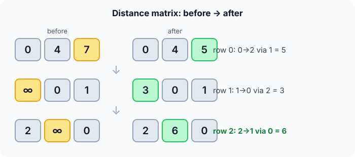

Prerequisites
- Adjacency matrix.
- Dijkstra and edge relaxation.
- The idea of dynamic programming: build answers from smaller answers.
The analogy
Everyday analogy
Think of a travel agent filling in a table of the cheapest fares between all cities. First they allow only direct flights; then they allow connections through Paris; then through Paris or London; and so on.
Each new hub city can only make fares cheaper, never more expensive. After allowing every city as a connection, the table is complete. Floyd-Warshall does exactly this, one hub at a time.
How it works
Precondition: negative edges are allowed, but no negative cycle. A negative value on the diagonal at the end means there is one.
Start with the table by hand
Directed edges: 0→1 (4), 1→2 (1), 0→2 (7), 2→0 (2). Missing edges are ∞; the diagonal is 0. For each hub $k$, update $d[i][j] = \min(d[i][j], d[i][k] + d[k][j])$. Predict, then open "Check".
Example: predict before you read
Step 1. Hub $k = 0$. Predict which entry improves.
Check
$d[2][1]$: 2 → 0 → 1 costs 2 + 4 = 6, better than ∞.
Step 2. Cover the next line and guess: hub $k = 1$. Which entry improves?
Check
$d[0][2]$: 0 → 1 → 2 costs 4 + 1 = 5, better than 7.
Step 3. Hub $k = 2$. Predict the change and the final table.
Check
$d[1][0]$: 1 → 2 → 0 costs 1 + 2 = 3. Final rows: [0, 4, 5], [3, 0, 1], [2, 6, 0].

Quick recall: Before reading further, cover the text above and say out loud: what does the outer loop variable $k$ mean?
Check your answer
The newest vertex allowed as a stop-over. After step $k$, the table holds shortest paths using only stop-overs from 0 to $k$.
Finish the picture: why the loop order matters
The loop over hubs $k$ must be the outermost loop.
- With $k$ outermost. Predict what's true after finishing hub $k$.
Check
Every entry is the shortest path that only stops over at vertices 0..k. Adding hub $k + 1$ builds on those finished answers.
- With $k$ innermost. Predict what goes wrong.
Check
d[i][j] is final after its inner loop, before d[i][k] and d[k][j] have been improved by other hubs, so some shortest paths are missed.
Quick recall: Without scrolling up, say out loud: why did 2 → 1 improve at hub 0 and not later?
Check your answer
The best route 2 → 0 → 1 stops over in 0, so it becomes available as soon as vertex 0 is allowed.
The rule in plain words
Start with the edge-weight matrix (0 on the diagonal, ∞ for no edge).
For each hub $k$, for each pair $(i, j)$: if $d[i][k] + d[k][j] < d[i][j]$, replace $d[i][j]$. Keep the hub loop outermost.
Quick recall: Before you read the code, write the update rule in your own words. Then check below.
Check your answer
For every pair (i, j): if going from i to k and then from k to j is cheaper than the current i-to-j value, replace it with that sum.
The code
Read this code after you have filled the table by hand. It will make more sense.
const int INF = INT_MAX / 2; /* "no path"; halved so INF + INF can't overflow */
void floyd_warshall(int d[][3], int n) { /* d starts as the edge-weight matrix */
for (int k = 0; k < n; k++) /* allow k as a stop-over */
for (int i = 0; i < n; i++)
for (int j = 0; j < n; j++)
if (d[i][k] + d[k][j] < d[i][j])
d[i][j] = d[i][k] + d[k][j];
}Definition
What you just did, in one line: the Floyd-Warshall algorithm computes shortest paths between all pairs of vertices by allowing each vertex in turn as an intermediate stop.
graph LR
0((0)) -->|4| 1((1))
1 -->|1| 2((2))
0 -->|7| 2
2 -->|2| 0
How fast is it?
Quick recall: Before looking at the formula, predict: how many updates does the algorithm check for $V = 100$?
Check your answer
$100^3 = 1{,}000{,}000$: one for each choice of $k$, $i$ and $j$.
Three nested loops over $V$ vertices, with constant work inside:
$$V \cdot V \cdot V \;=\; O(V^3) \text{ time}, \qquad O(V^2) \text{ space}$$For all pairs, the alternative is to run Dijkstra from every vertex: $O(V (V + E) \log V)$, better on sparse graphs, but Dijkstra can't handle negative edges.
| Measure | Cost | Why |
|---|---|---|
| Time | $O(V^3)$ | Three nested loops |
| Space | $O(V^2)$ | The distance matrix, updated in place |
| Negative edges | Allowed | No early "final" decisions |
| Negative cycle | Detected | Some $d[i][i] < 0$ at the end |
Warning
Using INT_MAX for "no path" overflows when two of them are added. Use a large value such as INT_MAX / 2, or skip the update when either part is infinite.
Exam tip
Be ready to fill in the matrix after each value of $k$, and to explain why $k$ must be the outermost loop: it is the dynamic-programming stage.
Common mistakes
- Putting the $k$ loop inside the $i$ and $j$ loops.
- Using
INT_MAXas infinity and overflowing onINF + INF. - Forgetting to set the diagonal to 0 before starting.
Try it yourself
Exercise 1 (warm-up)
In the final table, what is the shortest distance from 2 to 1, and which route gives it?
Hint
It improved at hub 0.
Answer
6, via 2 → 0 → 1 (2 + 4).
Exercise 2 (a bit harder)
Change the edge 2 → 0 to weight −6. Run the algorithm and look at the diagonal. What do you find? Write your answer down before you open it.
Show answer
The cycle 0 → 1 → 2 → 0 costs 4 + 1 − 6 = −1, a negative cycle. After the algorithm, $d[0][0]$ (and the other diagonal entries) are negative, which is how a negative cycle is detected.
Did you know?
Did you know?
Robert Floyd and Stephen Warshall published the algorithm in 1962; Bernard Roy had found it in 1959, so it is sometimes called Roy-Floyd-Warshall.
Change $\min$ and $+$ to "or" and "and" and the same three loops compute which vertices can reach which: the transitive closure of a relation.
Key points to remember
If you remember one thing from each line, remember the because.
- It finds all pairs at once because it updates the whole matrix for each new stop-over.
- It costs $O(V^3)$ because it checks every hub for every pair.
- The hub loop is outermost because each stage builds on answers that used only earlier hubs.
- Negative edges are fine because no entry is declared final early.
- A negative diagonal means a negative cycle because a vertex can then reach itself for less than 0.
Self-check questions
Answer these in order, out loud. They follow the page, so your answers become the script of your video.
- How is Floyd-Warshall like a travel agent adding connection cities one at a time?
Sample answer
First only direct flights count, then connections through one hub, then through two, and so on. Each new hub can only make fares cheaper.
- Walk through the three hubs on the 3-city example.
Sample answer
Hub 0: 2→1 becomes 6. Hub 1: 0→2 becomes 5. Hub 2: 1→0 becomes 3. Final rows [0, 4, 5], [3, 0, 1], [2, 6, 0].
- Why does the code define
INFasINT_MAX / 2?A good answer mentions adding two infinities.
Sample answer
The update adds
d[i][k] + d[k][j]. If both areINT_MAXthe sum overflows to a negative number; halving keeps the sum in range. - So what is Floyd-Warshall, in one sentence?
Sample answer
An all-pairs shortest-path algorithm that lets each vertex in turn act as a stop-over and keeps the cheaper of "direct" and "through the stop-over".
- Why must the hub loop be the outermost loop?
A good answer explains what is true after each stage.
Sample answer
After stage $k$, every entry is the best path using hubs 0..k only. Stage $k + 1$ relies on those finished values; with $k$ inside, entries would be finalised too early.
- What do time, space and negative edges look like for this algorithm?
Sample answer
$O(V^3)$ time, $O(V^2)$ space; negative edges are allowed, and a negative diagonal reveals a negative cycle.
- When would you run Dijkstra from every vertex instead?
Sample answer
On large sparse graphs with non-negative weights, where $V$ runs of $O((V + E) \log V)$ beat $O(V^3)$.
- If you had to teach this to a friend in 2 minutes, what would you leave out, and why?
Sample answer
I'd leave out the overflow detail and transitive closure. I'd keep the travel-agent analogy, the 3-city table with one improvement per hub, and "all pairs, three loops, $O(V^3)$".
External resources
- USFCA: Floyd-Warshall visualization: watch the matrix update hub by hub.
- GeeksforGeeks: Floyd-Warshall: code and a worked example.
- Wikipedia: Floyd-Warshall algorithm: history, path reconstruction and transitive closure.
Videos
- YouTube search: Floyd-Warshall explained: pick a walkthrough with the matrix.